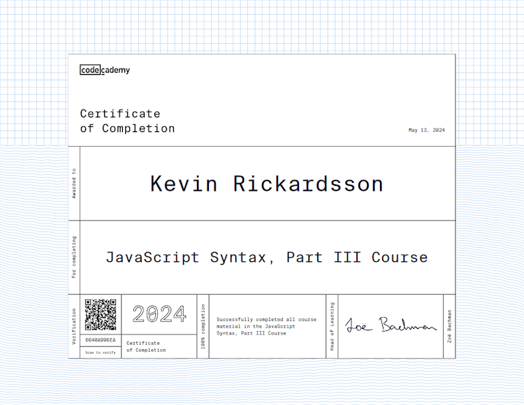
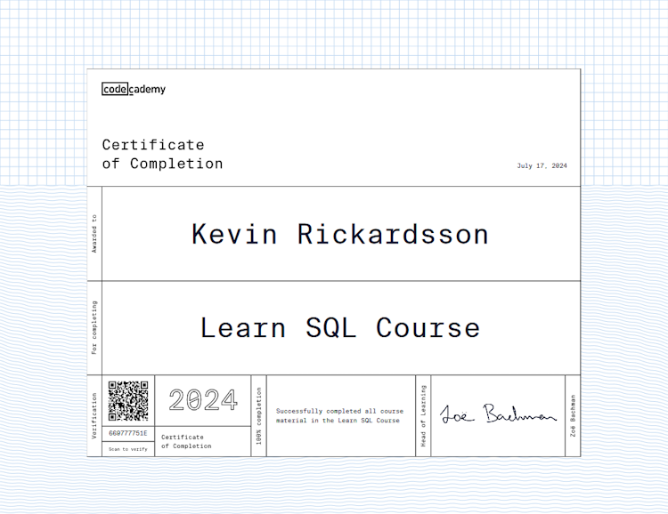
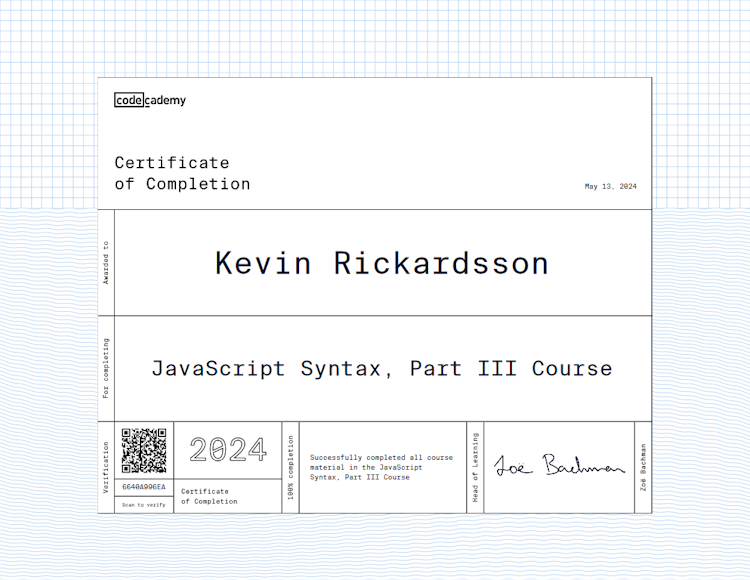
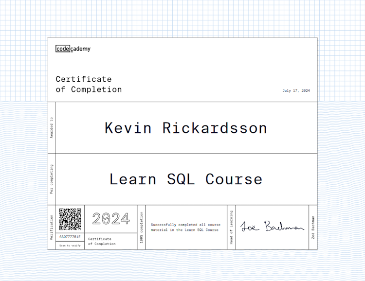

Skåne, Sverige
Skåne, Sverige

Utbildning
Systemutvecklare .NET
2024-05 - Pågående
Lexicon Malmö
Allmän Kurs
2014-01 - 2016-06
Österlens Folkhögskola
Yrkesförarutbildning
2012-04 - 2012-09
Malenagymnasiet Sjöbo
Kunskaper
C#
- ASP.NET MVC
- ADO.NET
- Entity Framework Core
JavaScript
- React
- NextJS
- Tailwind
- Bootstrap
Andra
- Python
- PHP
- MySQL, SqLite, MariaDB
- Git / Github
- HTML / CSS
- MS Office (365)
Språk
- Svenska
- Engelska
Behörigheter
- AMBECEDE
- YKB & Förarkort
- Truck A 2, 3, 4 + B 1, 2
- Kran upp till 18 t/m
Kevin Rickardsson
Nyfiken, ordningsam med en fallenhet för teknik.
Jag har ett stort intresse för infrastruktur och hur saker i allmänhet fungerar.
Jag är självgående och snabbupplärd och jag är angelägen att ha fungerande rutiner och tydlig struktur i arbetet,
vilket i min åsikt är en stor fördel när det gäller bland annat kodande.
Jag har under många år ägnat mig åt MMORPG's och har på senare tid även spenderat en stor del av min fritid till att programmera.
Projekt
Twitch Streamers
Hjälper ofta en streamer på Twitch-platformen att utveckla skript & program för dennes stream för att utveckla produkten. Bland annat generell support, nedanstående projekt samt diverse funktioner och skript för att underlätta och stödja i arbetet.
Twitch Chattbot
Byggde en chattbot för Twitch som samarbetar med nedanstående API för att hantera och bekräfta när användare vill länka mellan Discord & Twitch. Tanken är att detta ska bli ett projekt där jag lär mig bygga en egen websocket-klient från grunden och inte använda ett package.
Twitch - Discord Subscriber API
Behövde en lösning för en Twitch streamer att synkronisera subscribers mellan platformarna Twitch och Discord.
Jag byggde ett webbAPI med PHP och MariaDB på en Apache server och skrev ett program i C# som hämtar datan från Twitch regelbundet och schemalade detta med CronJob.
Programmet formaterar och synkroniserar alla ändringar i subscribers och laddar sedan upp ändringarna.
Datan hämtas sedan av en chatbot på Discord för att hantera roller för att streamern ska kunna ha en speciell roll för sina supporters.
GW2 Inventory Viewer

Ville lära mig hur JavaScript fungerade lite mer så byggde en hemsida som hämtar data från GuildWars2 API och presenterar den på en hemsida där man kan bläddra mellan olika kategorier av ens personliga spelkonto. Använde LocalStorage i webbläsaren för att spara information, fick utveckla min datastruktur löpande efterhand jag utvecklade funktioner. Påbörjade senare en omskrivning i React & Bootstrap.
Hus Hem & Trädgård

Hemsida åt ett lokalt företag som sysslar med lite allt möjligt inom renovering och skötsel.
Arbete
Busschaufför
2016-12 - 2023-11
Framförning av tung buss i linjetrafik med
tillhörande ansvar för säkerhet och kundbemötande.
2019 Yttre Trafikledare på depån där jag effektivt
sänkte företagets vitesbelopp genom att arbeta proaktivt med underhåll och samkörning tillsammans med
verkstaden. Efter någon månad blev jag ombedd att även sköta planering av fordonsflottan i sydöstra Skåne.
2022-2023 Skolbuss & Beställning. Var även aktiv i planeringen av linjer.
Certifikat
 


